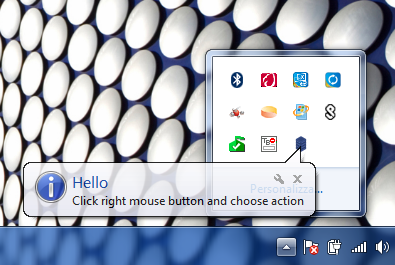
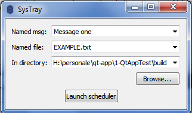
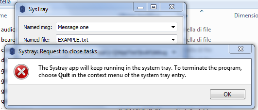
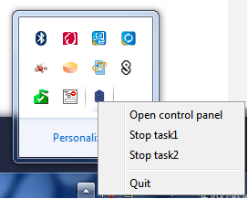
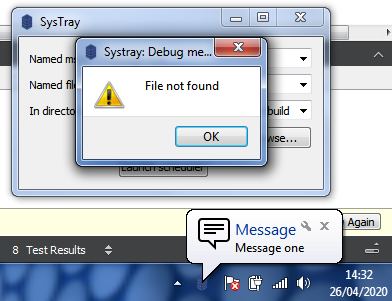

The application executes two task in series. The first task shows a message every 10 seconds and the second task checks every 30 seconds if a file exists or not; if not, then the application shows a warning message.

Screenshot of the Systray icon displayed
The single class MainWindow allows the configuration of task1 and task2. The Named msg field is the message that task1 periodically shows. The Named file field is the file that task2 will search. The Browse button allows the user to specify the folder where to search for the file. The Launch scheduler button allows to start both task1 and task2 with their scheduled timing.

Screenshot of the Systray control panel
It is possible to stop both tasks closing the panel; the main application continues to run in hide mode. An information message about this is displayed.

The Open control panel action restores the Panel control. The user can choose other actions through the systray icon menu. So, it is possible to stop task1 or task2 through the relative Stop task1 and Stop task2 actions. The Quit action allows to close the application.

The MainWindow class inherits QWidget:
class MainWindow : public QWidget { Q_OBJECT public: MainWindow(QWidget *parent = 0); ~MainWindow(); protected: void closeEvent(QCloseEvent *event) override; public slots: void launchScheduler(); private slots: void iconActivated(QSystemTrayIcon::ActivationReason); void showMessage(); void browse(); void find(); private: void showFiles(const QStringList &paths); QComboBox *createComboBox(const QString &text = QString()); void stopTimer1(); void stopTimer2(); QTimer *timer1; QTimer *timer2; QSystemTrayIcon* trayIcon; QMenu* trayIconMenu; QMenu* createMenu(); QComboBox *msgComboBox; QComboBox *fileComboBox; QComboBox *directoryComboBox; QLabel *filesFoundLabel; QDir currentDir; };
Several private slots are implented to respond to user interaction through the menu of the systray and the control panel buttons. Furthermore timer1 and timer2 allow to execute the two tasks periodically.
- The main application section is here reported:
MainWindow::MainWindow(QWidget *parent) : QWidget(parent) , trayIcon(new QSystemTrayIcon(this)) { // Tray icon menu auto menu = this->createMenu(); this->trayIcon->setContextMenu(menu); // App icon auto appIcon = QIcon(":/icons/server.png"); this->trayIcon->setIcon(appIcon); this->setWindowIcon(appIcon); // Timers timer1 = new QTimer(this); timer2 = new QTimer(this); // Displaying the tray icon this->trayIcon->show(); // Interaction connect(trayIcon, &QSystemTrayIcon::activated, this, &MainWindow::iconActivated); // Main window setWindowTitle(tr("SysTray")); QPushButton *browseButton = new QPushButton(tr("&Browse..."), this); connect(browseButton, &QAbstractButton::clicked, this, &MainWindow::browse); QPushButton *launchSchedulerButton = new QPushButton(tr("&Launch scheduler"), this); connect(launchSchedulerButton, &QAbstractButton::clicked, this, &MainWindow::launchScheduler); msgComboBox = createComboBox(tr("Message one")); fileComboBox = createComboBox(tr("EXAMPLE.txt")); directoryComboBox = createComboBox(QDir::toNativeSeparators(QDir::currentPath())); filesFoundLabel = new QLabel; QGridLayout *mainLayout = new QGridLayout(this); mainLayout->addWidget(new QLabel(tr("Named msg:")), 0, 0); mainLayout->addWidget(msgComboBox, 0, 1, 1, 4); mainLayout->addWidget(new QLabel(tr("Named file:")), 4, 0); mainLayout->addWidget(fileComboBox, 4, 1, 1, 4); mainLayout->addWidget(new QLabel(tr("In directory:")), 6, 0); mainLayout->addWidget(directoryComboBox, 6, 1, 1, 4); mainLayout->addWidget(filesFoundLabel, 8, 0, 1, 4); mainLayout->addWidget(browseButton, 8, 4); mainLayout->addWidget(launchSchedulerButton, 10, 2); }
where the following functions are called:
void MainWindow::launchScheduler() { qDebug() << "Timer" << " Status" << "Interval" << "Remaining time"; qDebug() << "Timer 1 " << timer1->isActive() << " " << timer1->interval() << " " << timer1->remainingTime(); qDebug() << "Timer 2 " << timer2->isActive() << " " << timer2->interval() << " " << timer2->remainingTime(); if(!timer1->isActive()) { timer1 = new QTimer(this); connect(timer1,&QTimer::timeout,this,&MainWindow::showMessage); timer1->start(10000); } if(!timer2->isActive()) { timer2 = new QTimer(this); connect(timer2,&QTimer::timeout,this,&MainWindow::find); timer2->start(30000); } } QMenu* MainWindow::createMenu() { auto stopTask1 = new QAction(tr("&Stop task1"), this); connect(stopTask1, &QAction::triggered, this, &MainWindow::stopTimer1); auto stopTask2 = new QAction(tr("&Stop task2"), this); connect(stopTask2, &QAction::triggered, this, &MainWindow::stopTimer2); auto showPanel = new QAction(tr("&Open control panel"), this); connect(showPanel, &QAction::triggered, this, &QWidget::showNormal); auto quitAction = new QAction("&Quit", this); connect(quitAction, &QAction::triggered, qApp, &QCoreApplication::quit); auto menu = new QMenu(this); menu->addAction(showPanel); menu->addAction(stopTask1); menu->addAction(stopTask2); menu->addSeparator(); menu->addAction(quitAction); return menu; } void MainWindow::iconActivated(QSystemTrayIcon::ActivationReason reason_) { switch (reason_) { case QSystemTrayIcon::Trigger: this->trayIcon->showMessage("Hello", "Click right mouse button and choose action"); break; default: ; } } QComboBox *MainWindow::createComboBox(const QString &text) { QComboBox *comboBox = new QComboBox; comboBox->setEditable(true); comboBox->addItem(text); comboBox->setSizePolicy(QSizePolicy::Expanding, QSizePolicy::Preferred); return comboBox; } static void updateComboBox(QComboBox *comboBox) { if (comboBox->findText(comboBox->currentText()) == -1) comboBox->addItem(comboBox->currentText()); }
- The implementiation section of task1 is here reported:
void MainWindow::showMessage() { QString msgName = msgComboBox->currentText(); updateComboBox(msgComboBox); auto titleEdit = new QLineEdit(tr("Message")); auto appIcon = QIcon(":/icons/message.png"); trayIcon->showMessage(titleEdit->text(), msgName, appIcon, 500); qDebug() << msgName; }
- The implementiation section of task2 is here reported:
void MainWindow::browse() { QString directory = QDir::toNativeSeparators(QFileDialog::getExistingDirectory(this, tr("Find Files"), QDir::currentPath())); if (!directory.isEmpty()) { if (directoryComboBox->findText(directory) == -1) directoryComboBox->addItem(directory); directoryComboBox->setCurrentIndex(directoryComboBox->findText(directory)); } } void MainWindow::find() { QString fileName = fileComboBox->currentText(); QString path = QDir::cleanPath(directoryComboBox->currentText()); currentDir = QDir(path); updateComboBox(fileComboBox); updateComboBox(directoryComboBox); QStringList filter; if (!fileName.isEmpty()) filter << fileName; QDirIterator it(path, filter, QDir::AllEntries | QDir::NoSymLinks | QDir::NoDotAndDotDot, QDirIterator::Subdirectories); QStringList files; while (it.hasNext()) files << it.next(); files.sort(); showFiles(files); } void MainWindow::showFiles(const QStringList &paths) { QString dbgMsg("File not found"); if(!paths.size()) { qDebug() << dbgMsg; QMessageBox::warning(this, tr("Systray: Debug message"),dbgMsg); } filesFoundLabel->setText(tr("%n file(s) found", nullptr, paths.size())); filesFoundLabel->setWordWrap(true); }

Task Scheduler example with both task1 and task2 running
QWidget's closeEvent() function is able to inform the user (when closing the editor window) that the program will keep running in the system tray until the user chooses the Quit entry in the icon's context menu. Than the timers will be stopped.
void MainWindow::stopTimer1() { timer1->stop(); } void MainWindow::stopTimer2() { timer2->stop(); } void MainWindow::closeEvent(QCloseEvent *event) { #ifdef Q_OS_OSX if (!event->spontaneous() || !isVisible()) { return; } #endif if (trayIcon->isVisible()) { QMessageBox::critical(this, tr("Systray: Request to close tasks"), tr("The Systray app will keep running in the " "system tray. To terminate the program, " "choose <b>Quit</b> in the context menu " "of the system tray entry.")); hide(); event->ignore(); if(timer1->isActive()) this->stopTimer1(); if(timer2->isActive()) this->stopTimer2(); } }
Files: